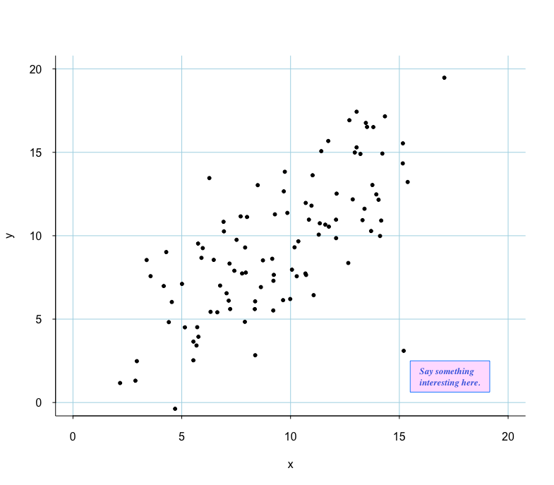

R Functions
Custom Figures
Download RFunctions1.R (GitHub)
-
dbplot() is a dot plot/box plot that displays individual data points, with automatic jittering when needed.
Its predecessor,
tplot(), was written over a decade ago. This newdbplot()builds upon it, offering enhanced functionality. Whilebeeswarm()in beeswarm package provides similar capabilities,dbplot()includes controls that better align with my taste and preferences.Inputs
Only y is absolutely required.Main arguments
- y A numeric vector to be plotted.
- g A grouping vector.
- clustering_distance Controls which data points are considered part of the same cluster and thus jittered.
- If NULL, the function determines a reasonable value, and it is returned if output=TRUE.
- Setting clustering_distance=0 disables jittering.
- jitter_amount Controls jitter distance.
- If NULL, the function determines a reasonable value, and it is returned if output=TRUE.
- Setting jittering_amount=0 disables jittering.
- output If TRUE, returns the clustering result, clustering_distance, and jittering_amount.
- group_names A vector of group names, defaulting to the factor levels of g.
- group_positions By default, data are plotted at x=1, 2, 3, ... unless group_positions are specified.
Color and Point Character
- indiv_col A vector of individula colors for y.
- group_col Specifies group colors,
- Each group can have different colors, but this is redundant information.
- If a single color is provided, all data points are drawn in that color.
- indiv_pch See indiv_col.
- group_pch See group_col.
Handling Missing Group
- NA_as_group If TRUE, missing values in g are treated as a separate group.
- NA_group_name Defaults to "Missing".
- NA_group_position The plotting position of the missing group, defaulting to the far right.
- NA_group_col The color for the "Missing" group.
- NA_group_pch The pch (plotting character) for the "Missing" group.
Boxplot
- box_col Boxplot colors, which can be specified for each group.
- NA_box_col Boxplot color for the "Missing" group.
Other Specifications
- grid_x Draws horizontal grid lines at specified values.
- grid_y Draws vertical grid lines at specified values. (a little silly)
- show_n If TRUE, displays sample sizes.
Figure Type Options
- fig_typeFigure type options.
- b: Boxplot
- d: Dot plot
- db: Dot over boxplot
- bd: Box over dot plot (very silly)
- NA_fig_type Figure type for "Missing" group.
Additional Inputs
- grid_par A list of paraameters to pass to the abline() function for drawing grid lines. (col, lty, lwd).
- plot() main, sub, xlab, ylab, xlim, ylim, axes, frame.plot.
- points() cex, bg.
- boxplot() range, notch, border, boxwex.
Example
set.seed(620) y <- rnorm(100, mean=100, sd=40) g <- factor(sample(c('C','B','R'), length(y), rep=TRUE), levels=c('C','B','R')) some_factor <- sample(c('A','B'), length(y), rep=TRUE) color_map <- c('A'='darkorange', 'B'='mediumslateblue') colors <- color_map[some_factor] y[ sample(seq_along(y), 5, rep=FALSE) ] <- NA g[ sample(seq_along(g), 4, rep=FALSE) ] <- NA dbplot(y, g, group_names=c('Cat','Bat','Rat'), indiv_col=colors, group_pch=19, NA_as_group=TRUE, NA_group_name='?', NA_group_position=5, box_col=c('grey80','grey90','lightgoldenrodyellow'), grid_y=seq(0,250,by=50), show_n=TRUE, fig_type=c('b','d','db'), NA_fig_type='d', grid_par=list(col='skyblue', lty=1, lwd=1), clustering_distance=NULL, jitter_amount=NULL, ylim=c(0,250), xlab='Animal', ylab='Score', # passed to plot() cex=1.2, # passed to points() boxwex=0.6, border='royalblue' # passed to boxplot() ) -
The kmplot() function generates Kaplan-Meier survival curves with various customization options, including a flexible "number at risk" table:
- The ability to customize the order of appearance to approximately match the curves.
- The ability to specify the time points where numbers are displayed.
Other functionalities are demonstrated in the example below.
Inputs
Main Arguments
- km Output of survfit()
- mark Tick mark style. The same as pch.
- simple If TRUE, the 'at risk' table will not be produced.
- xaxis.at Specifies time positions where 'at risk' numbers are computed and displayed.
- xaxis.lab Labels for the x-axis. Useful e.g., when time is in days but labels in year are preferred.
line Specifications
- lty.surv Line type for survival curves
- lwd.surv Line width for survival curves
- col.surv Color for survival curves
- lty.ci Line type for confidence intervals
- lwd.ci Line width for confidence intervals
- col.ci Color for confidence intervals
At Risk Table
- group.names Names displayed in the 'at risk' table and legend.
- group.order Reorders groups in the 'at risk' table to approximately match appearance of survival curves.
- extra.left.margin Adds extra space when group names are long.
- label.n.at.risk If TRUE, labels the 'N at risk' table.
- draw.lines Draws lines to specifies survival curves. (Not sure why this is optional)
- cex.axis Controls cex.axis and the text size of the 'N at risk' table.
Figure Appearances
- xlab X-axis label
- ylab Y-axis label
- main Plot title
- xlm Passed to xlim
- ylm Passed to ylim
Grid
- grid If TRUE, draws grid lines. Vertical lines appear at xaxis.at locations, and horizontal lines at pretty(0,1) locations.
- lty.grid Line type for grid
- lwd.grid Line width for grid
- col.grid Color for grid
Legend
- legend Enables/disables the legend
- loc.legend Controls legend position
Other
- add If TRUE, adds to an existing plot.
- returnOutput If TRUE, returns the output of survfit().
- ... Additional arguments passed to par().
Example
require(survival) kma <- survfit( Surv(time, status) ~ rx + adhere, data=colon ) kmplot(kma, mark='', simple=FALSE, xaxis.at=c(0, 0.5, 1:9)*365, xaxis.lab=c(0, 0.5, 1:9), # n.risk.at lty.surv=c(1,2), lwd.surv=1, col.surv=c(1,1,2,2,4,4), # survival.curves col.ci=0, # confidence intervals not plotted group.names=c('Obs ','Obs tumor adh','Lev','Lev tumor adh','Lev+5FU ','Lev+5FU tumor adh'), # Change group names group.order=c(5,3,1,6,4,2), # order of appearance in the n.risk.at table and legend. extra.left.margin=6, label.n.at.risk=FALSE, draw.lines=TRUE, cex.axis=0.8, xlab='Years', ylab='Survival Probability', # labels grid=TRUE, lty.grid=1, lwd.grid=1, col.grid='bisque', legend=TRUE, loc.legend='bottomleft', cex.lab=0.8, xaxs='r', bty='L', las=1, tcl=-0.2 # other parameters passed to plot() ) title(main='Chemotherapy for stage B/C colon cancer', adj=.1, font.main=1, line=0.5, cex.main=1) -
jmplot() plots the joint distribution along with marginal distributions on each margin. The parameters
dist(which controls jitter) andjit(which sets the jitter amount) are currently swapped for unknown reasons. I'll fix it someday. In the meantime, ggplot2 has this covered.Example
set.seed(1220) x <- rexp(100) y <- rexp(100) levels <- as.factor(sample(c("Male","Female"), 100, TRUE)) co <- c('brown','royalblue')[as.numeric(levels)] jmplot(x, y, levels, col=co, pch=19, main='Title', show.n=TRUE)
-
Deprecated. (Discrete scatter plot) The idea was to show continuous data with lots of ties effectively. This is no longer being developed. Use jitter() function carefully.
show.colors() shows all 657 named colors in R. You can select a color and display its name by runningcolors()[n].Example
show.colors()
colors()[139] [1] "forestgreen"text.with.bg() adds text to a plot with a background rectangle.Inputs
Main Arguments
- x.pos Position of the text box on the x-axis (upper-left corner).
- y.pos Position of the text box on the y-axis (upper-left corner).
- txt The text to be displayed.
Padding & Sizing
- x.pad Horizontal padding around the text, relative to the plot size (%).
- y.pad Veritcal padding around the text, relative to the plot size (%).
Appearance
- col Color of the text.
- bkgr Background color of the text box. Set to
NAfor transparency. - border Color of the rectangle border. Defaults to
NA(no border).
Additional Arguments
- ... Passed to `text()` and `strwidth()`/`strheight()`, allowing customization of font size (`cex`) and style (`font`),
Example
set.seed(620) x <- sample(4:14, 100, replace=TRUE) + rnorm(100,0,1) y <- x + rnorm(100, 0, 3) x[100] <- 15.2 ; y[100] <- 3.1 plot(x,y, xlim=c(0,20), ylim=c(0,20), panel.first=grid(nx=NULL, ny=NULL,lty=1, col='lightblue')) txt <- paste('Say something','\n','interesting here.', sep='') text.with.bg(x.pos=15.5, y.pos=2.5, txt=txt, col='royalblue', bkgr='thistle1', x.pad=2, y.pad=2, border='dodgerblue', cex=0.8, font=4, family='serif')Deprecated.
tplot()is no longer maintained. Please usedbplot()instead.tplot() is an alternative to boxplot(). It allows individual data points to be displayed, either in the foreground or background, with jittering if necessary.
Example
This example demonstrates the various options available in tplot(). While this particular example is not the most effective way to visualize these data -due to unnecessary variation in color and point type- it highlights the function's customization features.colandpchcan be specified at either the individual or group level. In this example,colis set at the individual level, whilepchis assigned at the group level, though this pch variation is unnecessary.- The
typeargument controls the plot style: b (box only), d (dots only), bd (box in front of dots), and db (dots in front of the box). - Points that are closer than
distare jittered bydist. This implementation may be incorrect. -try different values to see its impact. - Box colors and borders are controlled by the
boxcolandboxborderarguments. - The
boxplot.parsargument is passed directly toboxplot(), allowing further customization.
Example
set.seed(100) y <- rnorm(80, 26, 9) sex <- factor(sample(c('Female', 'Male'), 80, TRUE)) group <- paste('Group ', sample(1:4, 40, prob = c(2,5,4,1), replace = TRUE), sep='') d <- data.frame(y, sex, group) rm(y,sex,group) tplot(y ~ group, data=d, ylim=c(0,50), las=1, cex=1, cex.axis=1, bty='L', show.n=TRUE, dist=0.5, jit=0.07, type=c('b','bd','db','d'), group.pch=TRUE, pch=c(15,17,20,19), group.col=FALSE, col=c('orange','darkgreen')[c(sex)], boxcol=c('dodgerblue','magenta', 'lightgrey', 'pink'), boxborder=grey(0.2), boxplot.pars=list(notch=TRUE, boxwex=0.5) )